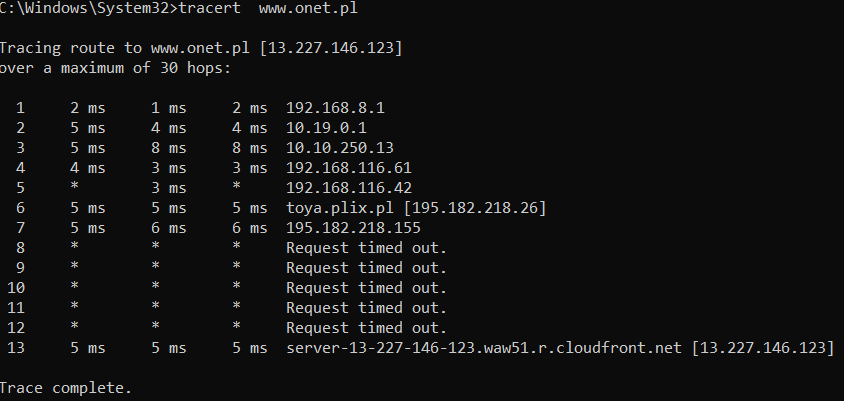
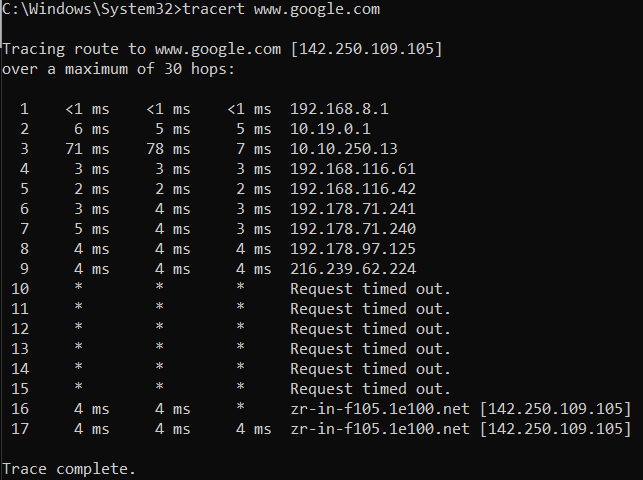
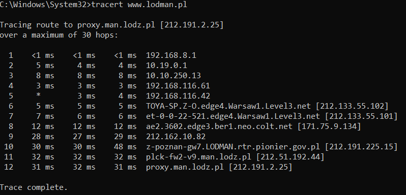

IP Networking Report
Part 1: Theoretical
1.1 IP Address
An IP address is a number that identifies a device on a network (example: 192.168.1.10).
1.2 Network Subnets
A subnet is a smaller part of a larger network. Subnets help organize and split networks.
1.3 Network Classes
Older IPv4 networks were divided into classes:
- Class A: Large networks (1.0.0.0 – 126.0.0.0)
- Class B: Medium networks (128.0.0.0 – 191.255.0.0)
- Class C: Small networks (192.0.0.0 – 223.255.255.0)
1.4 Network Mask
The subnet mask shows which part of an IP address is the network and which is the host (example: 255.255.255.0).
1.5 Routing Table
A routing table lists possible network paths and tells the device where to send packets.
1.6 Default Gateway
The default gateway is the router that sends traffic out of the local network.
1.7 Broadcast
A broadcast address sends a message to all devices in the subnet.
1.8 Subnet Address
This is the first address in a subnet and identifies the network itself.
1.9 Private Network Address
Private IP ranges are used inside local networks (examples: 10.x.x.x, 172.16-31.x.x, 192.168.x.x).
1.10 Network Address Translation (NAT)
NAT lets multiple devices use one public IP address by translating internal private addresses.
Part 2: Practical
Tracerts

192.168.8.1 - Default Gateway/Home network
10.19.0.1 : 192.168.116.42 - ISP internal routing
195.182.218.26 - toya.plix.pl Located in Warsaw, Poland
13.227.146.123 - server-13-227-146-123.waw51.r.cloudfront.net www.onet.pl Located in Warsaw, Poland

192.168.8.1 - Default Gateway/Home network
10.19.0.1 : 192.168.116.42 - ISP internal routing
192.178.71.241 : 216.239.62.224 - external routing from Warsaw to California
142.250.109.105 - zr-in-f105.1e100.net www.google.com Located back in Warsaw, Poland

192.168.8.1 - Default Gateway/Home network
10.19.0.1 : 192.168.116.42 - ISP internal routing
192.178.71.241 : 142.251.67.208 - external routing in Warsaw on Google servers
142.250.130.94 - zq-in-f94.1e100.net www.google.pl Located in Warsaw, Poland

192.168.8.1 - Default Gateway/Home network
10.19.0.1 : 192.168.116.42 - ISP internal routing
212.133.55.102 - toya servers in Warsaw, Poland
171.75.9.134 - colt.net servers in Berlin, Germany... god knows why
212.162.10.82 - Frankfurt, Germany, I'm not questioning that
212.191.225.15 - back to Poland, Lodman servers Located in Poznan, Poland
212.191.2.25 - lodman.pl servers Located in Lodz, Poland